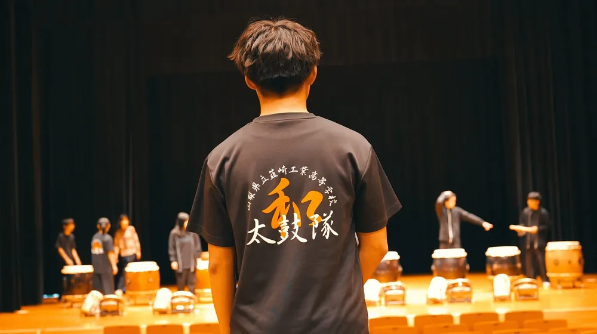

公式情報へのアクセス
本ファンポータルは有志により運営されています。入部・見学や部活動に関する公式なお問い合わせ、最新の公式アナウンスは、必ず学校公式窓口および太鼓部公式アカウントをご確認ください。
本ファンポータルは有志により運営されています。入部・見学や部活動に関する公式なお問い合わせ、最新の公式アナウンスは、必ず学校公式窓口および太鼓部公式アカウントをご確認ください。

地域ふれあい交流での演奏風景（公式Instagram提供素材より）
山梨県立韮崎工業高校太鼓隊の公式チャンネルです。定期演奏会「鍛麗」の全編記録や、芸文祭「士魂迅雷」などの演奏動画が多数公開されています。
太鼓部の部員たちが発信する日々の練習の様子、他校との合同練習会、地域イベントへの出演風景など、臨場感あふれる最新の活動模様が投稿されています。
韮崎工業高校の学校公式サイトです。部活動紹介ページにて太鼓部の創部の歴史、モットー、年間の活動方針、大会出場結果などの公式情報が掲載されています。
太鼓部が毎年冬に開催している定期演奏会「鍛麗 -TANREI-」の会場となる文化施設です。施設案内やイベント一覧をご確認いただけます。